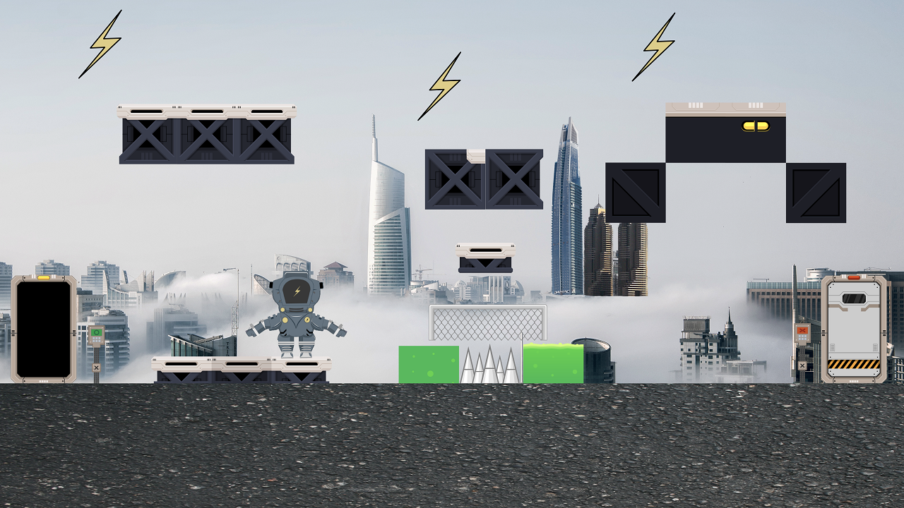

Vídeo sobre la temática
Escenarios


Personajes
Robot astronauta
Es el protagonista del videojuego 2D. Para poder pasar de nivel necesita energía que en el apartado sobre la dinámica del juego se contará más al respecto.

La mascota del robot
Es el acompañante del robot protagonista. En su pantalla mostrará información acerca de las estadísticas del personaje, como pueden ser: vida, energía, daño...
El boss final
Es el enemigo final del robot protagonista en el último escenario. Se encargará de intentar terminar con la vida del robot, para ello contará con un objeto muy potente que se mencionará en la dinámica del juego.
Dinámica Energy Bots
Objetivo
Recoger rayos que caen del cielo para obtener energía y llegar
al último escenario.
Obstáculos
Ácido, cuchillas que giran sin parar...
Final partida
Deberá enfrentarse al taladro eléctrico y demás
objetos que posee el boss para derrotarlo.